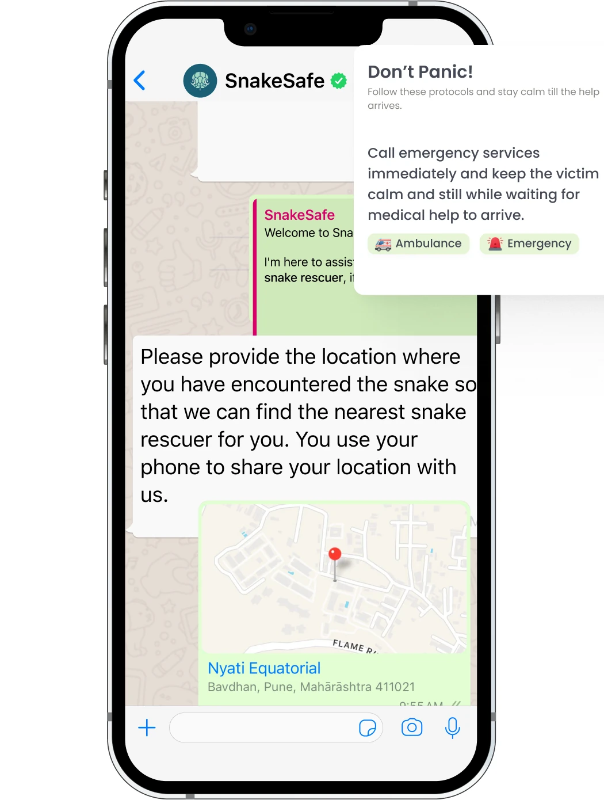
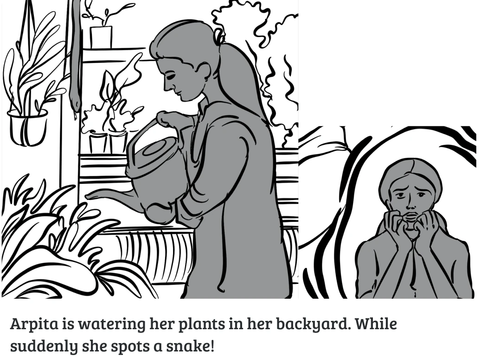
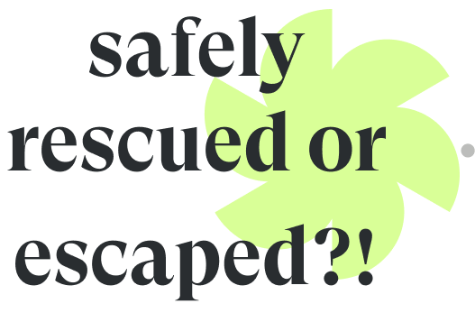
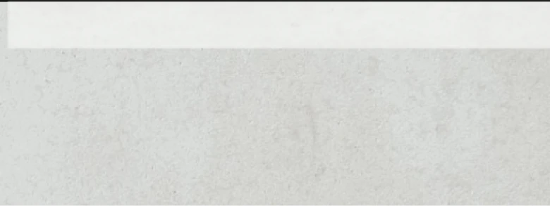
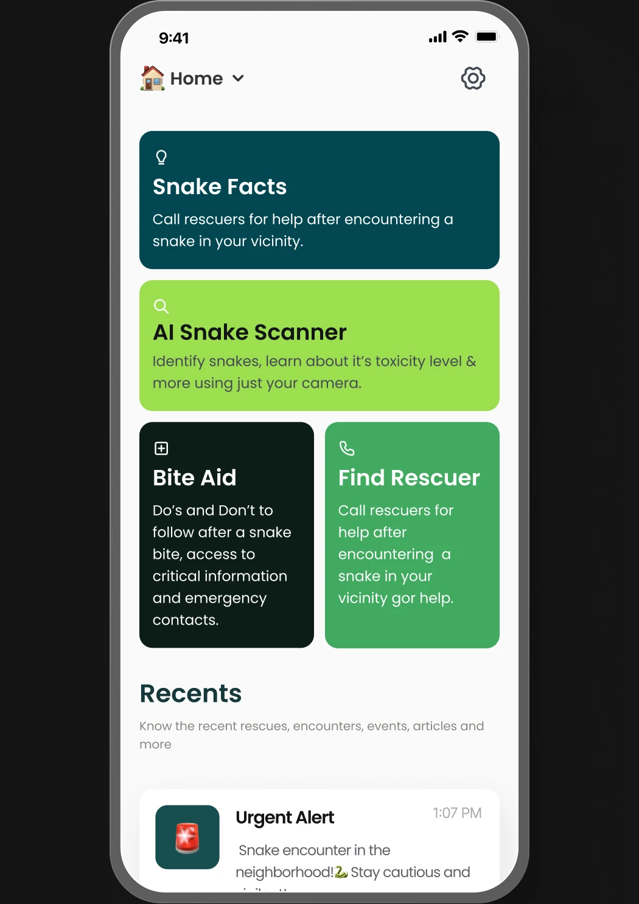
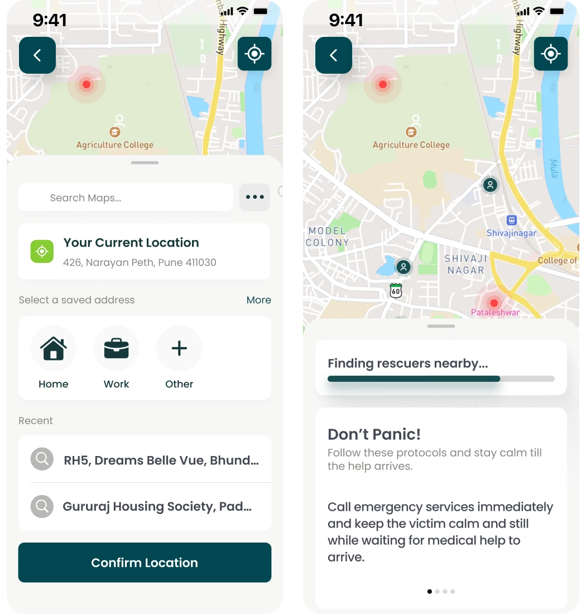
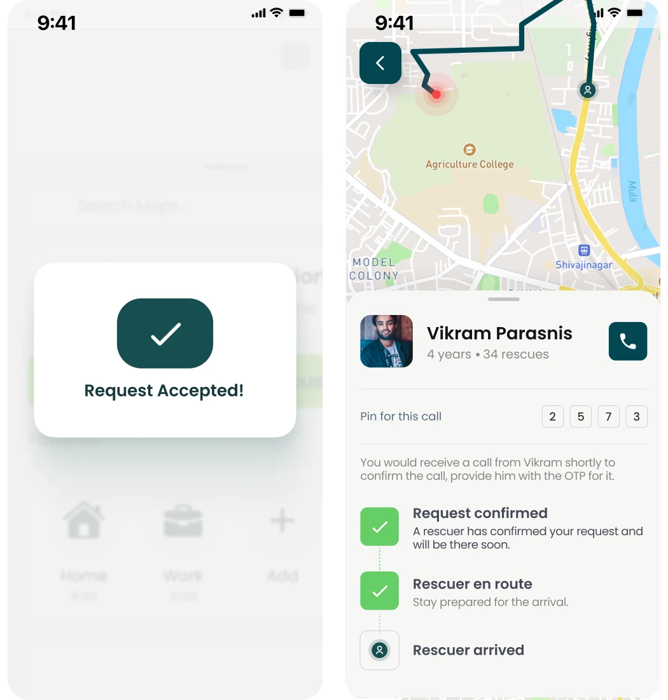
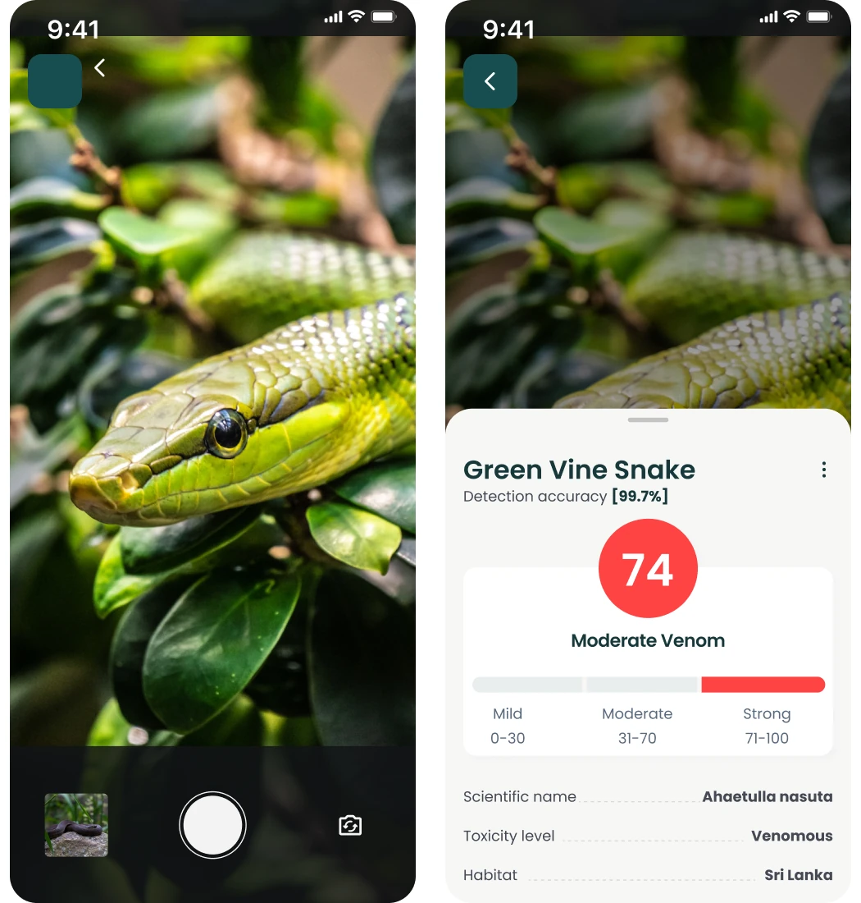
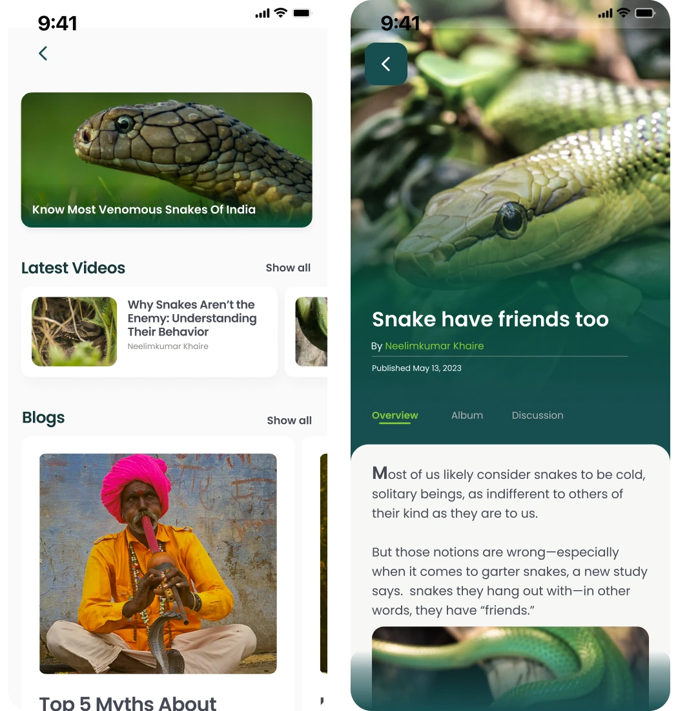
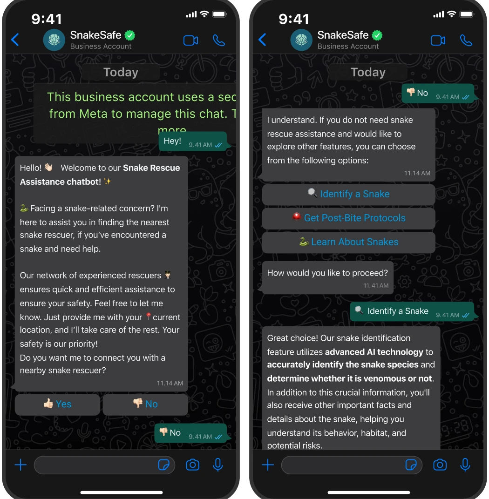

A snake encounter assistant
Problem
People often panic when they see a snake in their neighborhood, and most don’t know what to do. They also face delays in getting help because the rescue process is disorganized.
Solution
The solution is a mobile app integrated with WhatsApp chatbot that quickly connects people with nearby snake rescuers. It organizes the rescue process, gives guidance on what to do when a snake is spotted, and offers first-aid tips for snakebites.
People panic during snake encounters, don't know what to do, at the same time face delays in getting help due to unorganized rescue processes and lack of immediate resources.

-
panicking
the first response people have is panic and anxiety when they encounter a snake nearby.
-
confusion
usually panic follows with confusion by them not knowing what exactly they should do.
-
googling
Not knowing what to do first response is to open the phone and google for help available.
-
finding
finding snake rescuer contacts found on google, some don't pick up, some pick up but aren't available.
-
calling
after alot of time and efforts, calling the right person available to come to your location.
-
waiting
Waiting patiently while rescue assistance arrives. Maintain vigilance to ensure safety until the snake is successfully rescued.

Major insights
Delayed response due call transfer
Snake rescuers often transfer the emergency call, when they are preoccupied to other rescuers which may result in the delay to reach and handle situation quickly.
20-30 mins
Around 52.4% of people we interviewd stated that it takes about 30 mins for help to arrive.
Lack of awareness
People living in tier 2 and tier 3 cities often have limited awareness about common snake species, leading to unnecessary anxiety and fear in situations.
83.6 %
83.6% people were unable to identify the snake as venomous / non-venomous or it’s type.
61.9 %
Around 62% of the survey candidates were unknown to the fact that killing a snake is held unlawful.
Inadequate first-aid information
Everyone is not adequately informed about the first aid or treatment for a snakebite.
72.6 %
About 73% of our survey candidates stated that they do not know proper first aid steps to follow after a snakebite.
Introducing SnakeSafe

Home Screen
design details

- learn about herpetology
- notify snake encounters
- finding nearby rescuers
- first aid guidance
- snake identification
Call a rescuer, educate yourself about snakes, and snake-bite first aid identify a spotted snake from the home page.
Call a Rescuer


To request a rescuer, enter your desired location where you need assistance. Once confirmed, wait for your nearby rescuer to be assigned. After the rescuer is appointed, you can review their details and contact them via call or message based on your needs and urgency.
Other screens
/ai snake scanner

/snake facts

Based on our research, we discovered that most spotted snakes are non-venomous, alleviating the need for immediate rescue or panic as these snakes are not harmful. Our Snake Identifier feature utilizes AI to swiftly identify the snake species.
Promoting awareness encourages maintaining a calm mindset to handle the situation effectively. We introduced a feature section to educate users on snake-related dos and don'ts, dispelling any false beliefs and demystifying common misconceptions.
Why would I install your app, which would take up my phone storage for an occurrence that is rare.
Integrating the solution, on a digital platform that users use in their day-to-day life, to minimize inconvenience and avoid hassle of downloading an app.
We discovered that users to aware people nearby in the society sent the pictures of the snake through WhatsApp and also ask for a rescuer’s contact details there.
Thus, WhatsApp seemed to be the most accessible entry point for us.
Just Dial
We understood from the users that what they do first is they google for help and get prompted by various snake rescuers available on Justdial.
However, we dk we cancelled it out.
Urban Company
Urban company has professionals from various domains thus thought that it would be relevant to add the snake rescue work here.
However, it would probably not be able to cater the other features we wanted to present.
Google Maps
Google maps seemed to be an option as there could be layer added over maps that could help find rescuers and google maps has its solutions such as google lens and search engine which could also be utilised.
However, it was not the common entry point by users when they encounter snakes.
Why not WhatsApp?
Validating with users.
“WhatsApp would be really easy for me as a medium to reach out quickly”
I wouldn't even need to spend time in downloading the app during emergency”
For us snake rescuers communicating and contact becomes much easier if it’s on WhatsApp”
You can even raise awareness using WhatsApp, as forwarding is what people do all the time”
Introducing SnakeSafe as a
WhatsApp Assistance Chatbot
We decided to keep the application open for users and added a WhatsApp business account integrating a Chatbot which also has the same features and functionalities as the application. And would be a convenient option for users during emergency.
